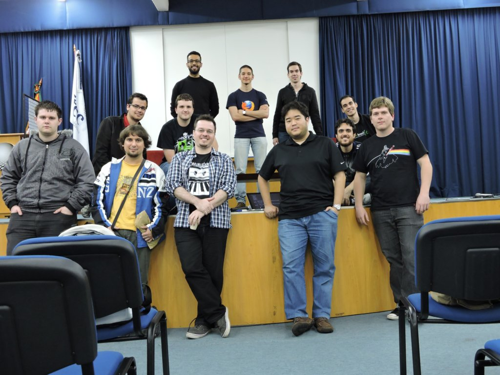

O pycaxias é um ambiente convidativo, rodeado de palestras e tutoriais incríveis,
onde o público poderá participar de momentos descontraídos,
além de fazer um network fantástico com muitas pessoas e algumas empresas.
Caxias do Sul tem tradição com a comunidade python, já sediou uma python Brasil em 2009 e
a primeira python Sul em 2017, e tem o objetivo de cada ano aumentar mais esse evento que já é
esperado por muitos da comunidade.
Este ano o evento acontece no dia 10 de novembro na Uniftec.
A quarta edição do pycaxias contará com diversas palestras e workshops.
Esse ano o evento aumentou de tamanho e terá o sábado todo de interações e muito conhecimento.
Estamos diversificando, não serão palestras somente sobre python,
vamos ter palestras sobre empreendedorismo, comunidade, carreira, serão diversos temas abordados.
A participação no evento é gratuita, porém os participantes são incentivados a
levar 2kg de alimentos não perecíveis (exceto sal),
que serão doados a uma instituição beneficente.
veja as fotos de alguns anos anteriores:

Inscrições
A participação no evento é gratuita, porém os participantes são incentivados a trazer 2kg de alimentos não perecíveis (exceto sal) que serão doados a uma instituição beneficente.
Inscreva-se agora
Os alimentos serão recebidos no momento do credenciamento.
Palestras Auditório
Horário
Sala 1
Sala 2
8:30
Credenciamento
8:50
Abertura
9:00
Palestra Sebrae
Renan Rezende Leal
Palestra Sebrae
Palestrante:
Palestra:
9:50
Coffee break
10:20
Construindo sites com Django
Eliane Isadora Faveron Maciel
Construindo sites com Django
Eliane Isadora Faveron Maciel:
Estudante de Ciência da Computação na Universidade de Caxias do Sul.
Trabalho atualmente como Desenvolvedora Web na NL Informática -
Cake ERP. Organizadora do grupo PyLadies Caxias do Sul e eventos Django Girls Caxias do Sul e
Django Girls Bento Gonçalves.
Construindo sites com Django:
Django é um framework para aplicações web gratuito e escrito em Python.
Com o Django é possível criar sistemas simples como um blog, e até sistemas mais completos.
Nesta palestra veremos como criar uma aplicação web simples mostrando as
funcionalidades e principais recursos do framework.
Uma história sobre parcerias, recrutamento, inteligencia artificial e python
Thiarlei Macedo
Uma história sobre parcerias, recrutamento, inteligencia artificial e python.
Thiarlei Macedo:
CEO da Enttry Software e da Skeel Recrutamento
Inteligente;
Presidente do TrinoPolo (Polo de TI da Serra Gaúcha);
Professor de Engenharia de Software e Projetos Empreendedores da Faculdade de Tecnologia Ftec;
Professor de Pós Graduação em Gestão da Inovação, Métodos Ágeis e Marketing Digital na FSG;
Consultor em inovação, marketing digital, startups e tecnologia da informação.
Formação acadêmica:
Mestre em Administração (PPGA/UFRGS);
MBA Executivo Internacional (UFRGS/FSG);
Especialista em Startups e Vale do Silício (Concordia Ventures/USA);
Pós Graduado em Teste e Garantia da Qualidade de Software (Feevale);
Graduado em Desenvolvimento de Sistemas de Informação (Ftec);
Técnico em eletrônica (ETFPel);
Certified Tester of Brazilian Software Testing Qualifications Board (BSTQB);
Content Marketing Specialist (Digital Marketer)
Uma história sobre parcerias, recrutamento, inteligencia artificial e python:
Apresentação do case de construção de uma startup a partir de um grupo de empresas e a criação do MVP.
11:00
Mercado de trabalho de python fora do Brasil
Eduardo Erlo
Mercado de trabalho de python fora do brasil
Eduardo Erlo:
Engenheiro de software com 9 anos de experiência, 3 deles trabalhando para
empresas de fora do Brasil. Meu foco como profissional sempre foi em tecnologias open-source,
principalmente as relacionadas com Python.
Dentre outras empresas, trabalhei como desenvolvedor e analista de sistemas Python na UCS por 4 anos,
engenheiro de software na Gymglish (gymglish.com) por 2 anos, e atualmente
trabalho na equipe de integrações de e-commerce da AdRoll (adroll.com) através da
BairesDev (bairesdev.com).
Mercado de trabalho de python fora do brasil:
Como está o mercado de trabalho com Python fora do Brasil? Você já se aventurou ou pretende seguir carreira internacional?
Neste bate-papo eu pretendo compartilhar minhas experiências trabalhando para empresas do exterior, na França e nos Estados Unidos,
mostrar meu ponto de vista do mercado de trabalho lá fora,
dar dicas de como iniciar carreira internacional e até divulgar algumas oportunidades de emprego em empresas gringas :)
Implementando CQRS com MediatR, Entity Framework e Dapper
Lenerson Nunes
Implementando CQRS com MediatR, Entity Framework e Dapper
Lenerson Nunes:
Bacharel em Ciência da Computação, Consultor, Arquiteto de Software de aplicações .NET focado em boas práticas de desenvolvimento como TDD e DDD. Trabalha com a plataforma .NET desde 2007. Cofundador e organizador do .NET Caxias, comunidade .NET de Caxias do Sul e região.
Implementando CQRS com MediatR, Entity Framework e Dapper:
O padrão CQRS é conhecido por grande parte dos desenvolvedores, porém, a maioria sente dificuldade em implementar alguma solução utilizando-o. O intuito dessa palestra é desmistificar, através de um exemplo prático, a implementação do mesmo, onde será mostrada a separação entre comandos de escrita e requisições de leitura. Para isso, será utilizada a biblioteca MediatR que facilita a criação da estrutura CQRS, Entity Framework para o tratamento dos comandos e Dapper que realizará a leitura de dados
11:40
Lightning talks
Open space
12:00
Almoço
13:40
Raio automatizador
Filipe Cifali Stangler
Raio automatizador
Filipe Cifali Stangler:
O que um SysAdmin quer mais que tudo na vida? Automatizar :)
Raio automatizador:
Você dev já cansou de subir o vagrant e algo não estar funcionando? O seu docker vive quebrando e
você não aguenta mais ter que reconfigurar ele a cada 5 minutos?
Venha conhecer um pouco sobre ansible e use-o para configurar as
coisas para você automaticamente.
Dask: Analise de dados paralela em python
14:20
Manual de como Hackear o futuro
Jaqueline Trevizan
Manual de como Hackear o futuro
Jaqueline Trevizan:
Cursando Análise e desenvolvimento de sistemas na FSG, apaixonada por tecnologia.
Apoia e incentiva o ensino de programação para crianças e a
inclusão da mulher na área de TI.
Manual de como Hackear o futuro:
As crianças de hoje quando adultas irão
trabalhar com profissões que ainda nem existem.
Como podemos, hoje, já começarmos a
prepará-las para esse futuro? Eu tenho uma ideia!!
15:00
Desenvolvimento desktop com python
Perceu Bertoletti
Desenvolvimento desktop com python
Perceu Bertoletti:
Sou desenvolvedor web, hoje atuo como instrutor, consultor e
desenvolvedor em empresas de software,
ativo em algumas comunidades,
gosto de partilhar conhecimento,
e estou sempre disponível para trocar idéias
Desenvolvimento desktop com python:
A ideia e mostrar alternativas de como criar interfaces,
fora e dentro do browser, mas que não seja necessário servir
essas interfaces num servidor.
15:40
Coffee break
16:10
Uma introdução não-gentil ao stream processing
Julio Biason
Uma introdução não-gentil ao stream processing
Julio Biason:
Uma introdução não-gentil ao stream processing:
Introdução aos perfiladores do python
Juciano Cardoso
Pensamento Computacional & BNCC
Juciano Cardoso:
Estudante de ciencias da computação pela Universidade de Caxias do sul com 3 anos de experiência profissional com python, com ênfase em microservices e IOT.
Introdução aos perfiladores do python:
apresentará os principais perfiladores para python, com exemplos práticos.
16:50
PyLadies e Django Girls: Mulheres aprendendo e ensinando a programar
PyLadies
PyLadies e Django Girls: Mulheres aprendendo e ensinando a programar
PyLadies
PyLadies é um grupo que incentiva e apoia mulheres na área de tecnologia através da linguagem python. Nessa palestra iremos compartilhar nossa trajetória durante este primeiro ano do grupo, mostrando que é possível aprender ensinando
Palestrantes:
PyLadies Caxias do Sul. Eliane Maciel: Estudante de Ciência da Computação na Universidade de Caxias do Sul. Trabalho atualmente como Desenvolvedora Web na NL Informática - Cake ERP. Organizadora do grupo PyLadies Caxias do Sul e eventos Django Girls Caxias do Sul e Django Girls Bento Gonçalves. Jaqueline Trevizan: Cursando Análise e desenvolvimento de sistemas na FSG, apaixonada por tecnologia. Apoia e incentiva o ensino de programação para crianças e a inclusão da mulher na área de TI.
Como melhorar sua carreira sem gastar nada!
Jonny William Deitos
Como melhorar sua carreira sem gastar nada!
Jonny William Deitos:
Graduado em Desenvolvimento de Sistemas para Internet, CEO da Cosmun Softwares, Apaixonado por desenvolvimento mobile. Organizador do Rede Neural, comunidade de TI de Caxias do Sul e região.
Como melhorar sua carreira sem gastar nada!
Existem muitas formas para dar um upgrade na sua carreira, cursos diversos, workshops, faculdade, especialização, pós-graduação, mestrado e por aí vai. Como estamos muito envolvidos no dia a dia com projetos diversos, linguagens específicas, acabamos criando um universo particular. Agora como obter esse desenvolvimento pessoal e profissional gastanto muito pouco ou muitas vezes nada?
17:30
Lightning talks
Open space
18:00
Encerramento
Local
Uniftec
Rua Gustavo Ramos Sehbe, 107, Caxias do Sul - RS - CEP 95012-669